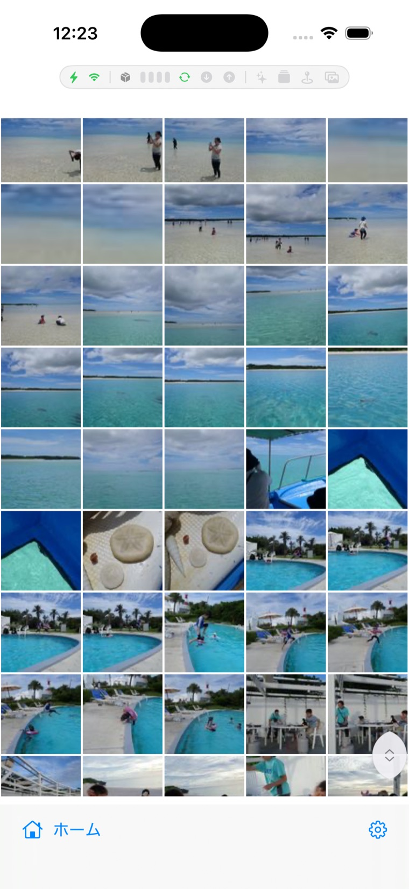

MosaicPhotos ヘルプ / Dropbox 連携とバックアップ
Dropbox 連携とバックアップ
Dropbox に接続すると、クラウド上の写真も端末の写真と同じ画面で見られます。さらに、 端末の写真を Dropbox へバックアップすることもできます。
接続する
- 設定 → Dropbox から接続します。ブラウザで Dropbox にログインして許可すると完了です。
- 接続情報（トークン）は端末のキーチェーンに安全に保存され、ファイルに平文では残しません。
- 専用 SDK は使わず、標準の通信のみ。解析・トラッキングはありません。
クラウドの写真を見る

- ホームの クラウド（または すべての写真）から閲覧できます。
- 一覧は差分同期で自動的に最新へ。初回は枚数が多いと読み込みに時間がかかります。
- サムネイルと本体画像は端末にキャッシュされ、2 回目以降は速く表示されます。
端末の写真をバックアップする
- 設定 → Dropbox（または 設定 → Backup）から、端末の写真を Dropbox の指定フォルダへアップロードします。 保存先はフォルダ内の端末ごとのサブフォルダ（例 iPhone-3F2A8C）です——家族で 1 つの Dropbox を 共有しても、端末どうしのファイルが混ざりません。
- バックアップを有効にしておけば、夜間（充電＋Wi-Fi＋未使用時）に自動で少しずつ進みます。 「Back Up Now」ですぐ実行することもできます。
- 画面の「バックアップ済み X / Y」で、全体のうち何枚が完了しているかをいつでも確認できます。
- 人物・アルバム・お気に入りなどの付加情報も一緒に保存されます。アップロードは内容の ハッシュ照合つきで、確認が取れたものだけ「済み」になります。
速度・容量の調整
- サムネイルの並列取得数：表示中のサムネが多いときに効きます（上げ過ぎると Dropbox 側の制限に当たることがあります）。
- キャッシュ上限：サムネイル／本体画像のディスク使用量の上限。設定 → Storage でも確認できます。
- 画面最上部のアクティビティバーで、同期・サムネ取得・ダウンロード・アップロードの動きを確認できます（→ 意味の一覧）。
画面上部のアクティビティバー（ツールチップ）の見かた
画面のいちばん上に出る細い帯は、いま裏側で何が動いているかを小さなアイコンで示すものです。 左から「動ける条件（電源・通信）」→「Dropbox の通信」→「端末内の自動処理」の順に並びます。 表示専用なので、押しても下の写真の操作を邪魔しません。
| アイコン | 意味 | 状態の見かた |
|---|---|---|
| 稲妻 ⚡ | 電源の条件（自動処理が動いてよいか） | 緑＝動ける／オレンジ＝電池待ち（省電力・低電池）／灰＝オフ |
| Wi-Fi | 通信の条件（裏での通信をしてよいか） | 緑＝OK／オレンジ＝保留（例：Wi-Fi 待ち）／灰＝オフ・圏外 |
| 箱 📦 | ここから先が「Dropbox の通信」という区切りの目印 | — |
| 青い縦バーの並び ＋「⟳ 数字」 | サムネイルの取得レーン | 点灯した本数＝いま取得中の数／数字＝順番待ちの枚数 |
| ぐるぐる矢印 ↻ | Dropbox の同期（一覧を最新にする） | 青＝同期中／緑＝最新を待ち受け中／赤＝エラー |
| 下向き矢印 ⬇ | 写真の本体画像をダウンロード中 | 点灯＝取得中（数字は同時本数） |
| 上向き矢印 ⬆ | バックアップのアップロード中 | 点灯＝アップロード中 |
| キラキラ ✨ ＋ 数字 | AI 画像認識（写真を解析して意味検索の対象にする） | 点灯＝解析中／数字＝残りの枚数 |
| 重なった四角 | 自動アルバム（旅行など）の生成中 | 点灯＝生成中 |
| 地図ピン 📍 | 場所アルバムのための位置解析中 | 点灯＝解析中 |
| 写真マーク 🖼 | 端末アルバムの読み込み中 | 点灯＝読み込み中 |
| 人物 👥 ＋ 数字 | ピープル（顔スキャン）の実行中 | 点灯＝スキャン中／数字＝残りの枚数 |
アイコンが灰色（薄い）＝待機中、色つき・点滅＝稼働中です。何も光っていなければ裏側は静かな状態。
バーを消したいときは 設定 → Dropbox →「アクティビティバーを表示」をオフにします（既定はオン）。